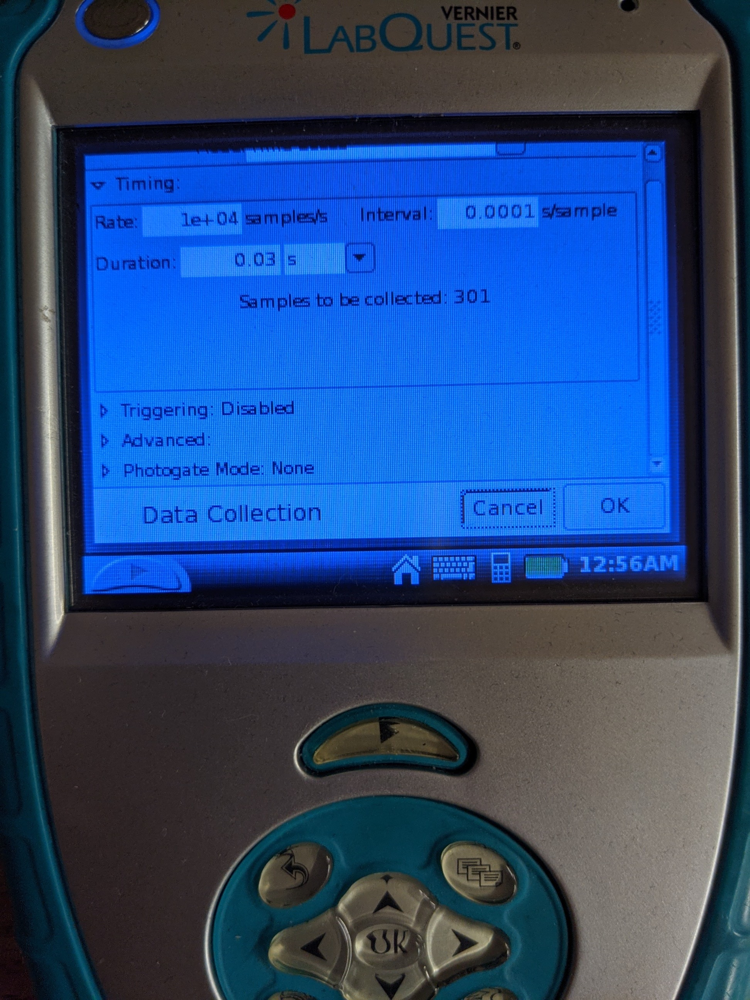
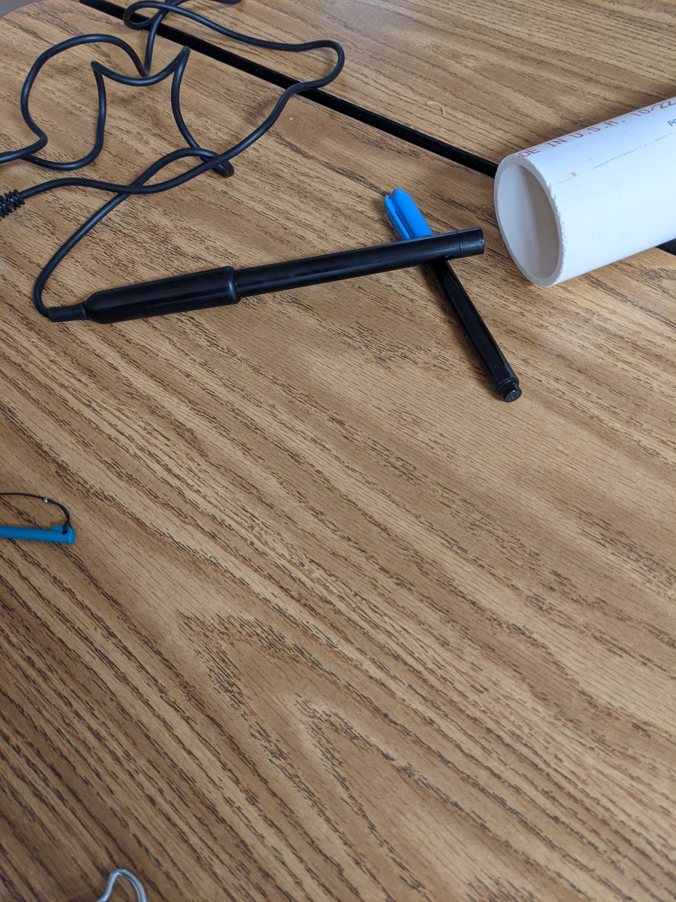
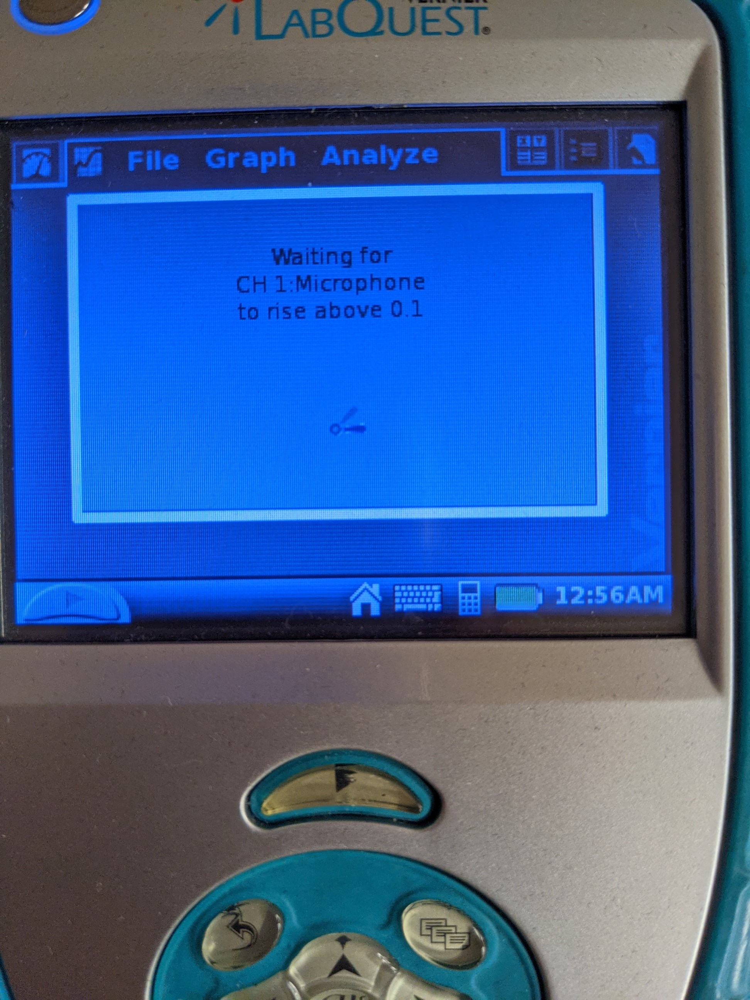

The Speed of Sound
Have you ever noticed that you always see a firework go off before you
actually hear the sound? Why is that? We will be investigating this phenonmenon
by measuring the speed of sound. Ideally, in order to get a measurement
we would need to make a sound with a visual cue and then time how
long it takes for the sound to reach our ears. There are many sources of
error in this method however, and it also requires far more space than we have.
Instead we will be looking at sound waves with technology!
Data Tables
Set up your data table as follows
Trial Time of First Peak Time of echo Time Interval
1
2
3
4
5
Average
Top
Materials
Lab Quest Vernier Microphone Thermometer
PVC Tube Meterstick Binder Clip
Top
Procedure
Record the temperature of the air in the room
Connect the Microphone to the LabQuest
Any of the top ports will work
From the 'File' menu, select 'New'
Remember to always discard the old data
Zero your Microphone
Click the box that says 'Mode'

Enable triggering by clicking on the triangle next to 'Triggering'
Check the box for 'Enable Triggering'
Make sure the first drop down is CH1: Microphone
Be sure to select the 'Increasing' radio button
change 'across' to 0.1
collect 0 points before trigger
Press okay
You will need to scroll down to see this full screen
Hold the Microphone right next to the open end of the tube.

Press play on the LabQuest
Check to make sure the LabQuest is awaiting data

Let the arms of the binderclip click together 2-3 inches from the opening of the tube
If your noise is too loud it will cause the graph to be very difficult to read
>
If successful you will get a graph that is similar to this.
Find the time at the first peak on your graph. This is the initial click
Find the time of the second peak on your graph. This is the echo from the tube
Find the difference between the two times. This is how long the sound wave was traveling
Record 5 trials
Find the length of your tube
Top
Data Analysis
Determine your average time interval by averaging your time intervals
Double the length of your tube. (Why do we need to do this?)
Determine the speed of the wave using your doubled length and average time interval
Remember the equation for velocity:
\[v={s \over t}\]
v - velocity
s - displacement
t - time
Top
Questions
The accepted speed of sound at 0˚C is 331 m/s. The speed of sound increases
by 0.607 m/s for every degree celcius increase. Use the following equation
to calculate the speed of sound in the classroom.
Find the percent error of your measurement using the following equation
\[error = { \lvert {v_{meas} - v_{theo}} \rvert \over v_{theo}} * 100 \% \]
How does the medium affect the speed of sound?
What kind of wave is sound?
Is it possible to have a sound in the vacuum of space? Why or
why not?
Back to Main Page